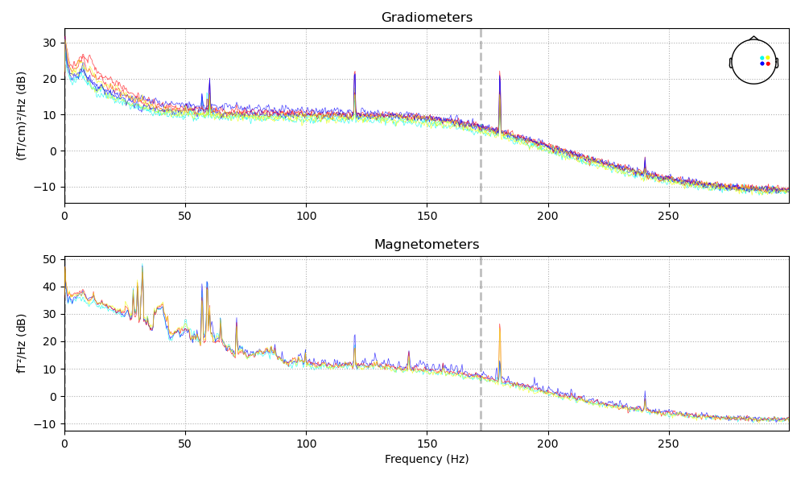
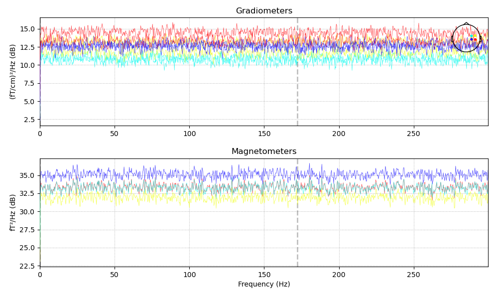
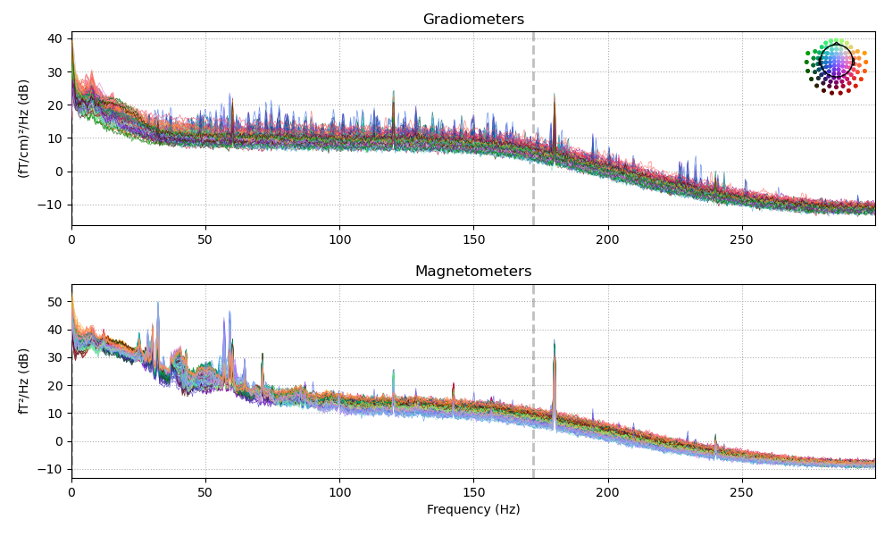
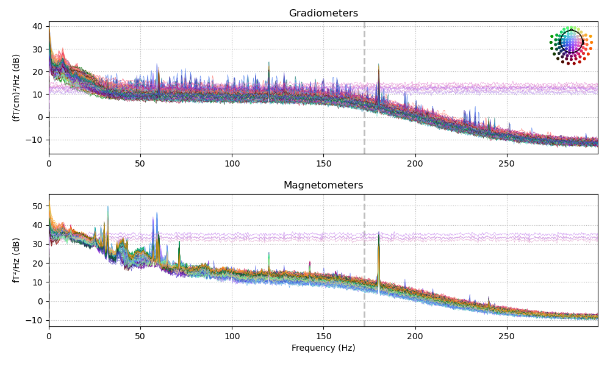
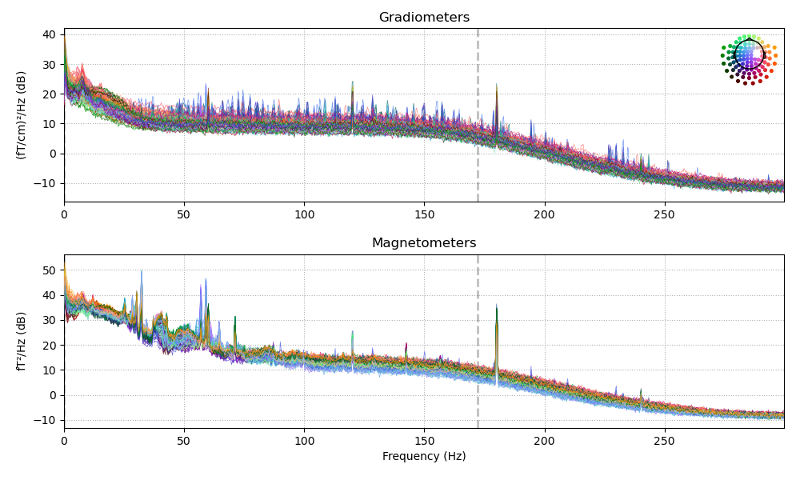

Note
Go to the end to download the full example code
Shuffle channels’ data in the time domain and plot.¶
- 
- 
- 
- 
- 
Opening raw data file /Users/praveen.sripad/nanna_data/mne_data/MNE-sample-data/MEG/sample/sample_audvis_raw.fif...
Read a total of 3 projection items:
PCA-v1 (1 x 102) idle
PCA-v2 (1 x 102) idle
PCA-v3 (1 x 102) idle
Range : 25800 ... 192599 = 42.956 ... 320.670 secs
Ready.
Reading 0 ... 166799 = 0.000 ... 277.714 secs...
Opening raw data file /Users/praveen.sripad/nanna_data/mne_data/MNE-sample-data/MEG/sample/sample_audvis_raw.fif,tperm-raw.fif...
Read a total of 3 projection items:
PCA-v1 (1 x 102) idle
PCA-v2 (1 x 102) idle
PCA-v3 (1 x 102) idle
Range : 25800 ... 192599 = 42.956 ... 320.670 secs
Ready.
Reading 0 ... 166799 = 0.000 ... 277.714 secs...
NOTE: plot_psd() is a legacy function. New code should use .compute_psd().plot().
Effective window size : 3.410 (s)
NOTE: plot_psd() is a legacy function. New code should use .compute_psd().plot().
Effective window size : 3.410 (s)
NOTE: plot_psd() is a legacy function. New code should use .compute_psd().plot().
Effective window size : 3.410 (s)
NOTE: plot_psd() is a legacy function. New code should use .compute_psd().plot().
Effective window size : 3.410 (s)
NOTE: plot_psd() is a legacy function. New code should use .compute_psd().plot().
Effective window size : 3.410 (s)
NOTE: plot_psd() is a legacy function. New code should use .compute_psd().plot().
Effective window size : 3.410 (s)
# Author: Eberhard Eich
# Praveen Sripad
#
# License: BSD (3-clause)
import os.path as op
import numpy as np
import mne
from mne.datasets import sample
from jumeg.jumeg_utils import (get_files_from_list, time_shuffle_slices,
channel_indices_from_list)
data_path = sample.data_path()
raw_fname = op.join(data_path, 'MEG/sample/sample_audvis_raw.fif')
# shuffle all MEG channels that begin with number 11
shflchanlist = ['MEG 11..']
# shuffle the whole length of the data
tmin, tmax = 0., None
# apply the shuffling
# time_shuffle_slices(raw_fname, shufflechans=shflchanlist, tmin=tmin, tmax=tmax)
plot_things = True
if plot_things:
permname = op.join(op.dirname(raw_fname),
op.basename(raw_fname).split('-')[0]) + ',tperm-raw.fif'
rawraw = mne.io.Raw(raw_fname,preload=True)
shflpick = channel_indices_from_list(rawraw.info['ch_names'][:],
shflchanlist)
procdperm = mne.io.Raw(permname, preload=True)
figraw = rawraw.plot_psd(fmin=0., fmax=300., tmin=0., color=(1,0,0), picks=shflpick)
axisraw = figraw.gca()
axisraw.set_ylim([-300., -250.])
# procdnr.plot_psd(fmin=0.,fmax=300., color=(0,0,1), picks=shflpick)
figshfl = procdperm.plot_psd(fmin=0., fmax=300., tmin=0., color=(1,0,0), picks=shflpick)
axisshfl = figshfl.gca()
axisshfl.set_ylim([-300., -250.])
megpick = mne.pick_types(rawraw.info, meg=True, ref_meg=False, eeg=False, eog=False, stim=False)
figraw1 = rawraw.plot_psd(fmin=0., fmax=300., tmin=0., color=(0,0,1), picks=megpick)
axisraw1 = figraw1.gca()
axisraw1.set_ylim([-300., -250.])
figshfl1 = procdperm.plot_psd(fmin=0., fmax=300., tmin=0., color=(0,0,1), picks=megpick)
axisshfl1 = figshfl1.gca()
axisshfl1.set_ylim([-300., -250.])
megnochgpick = np.setdiff1d(megpick, shflpick)
figraw2 = rawraw.plot_psd(fmin=0., fmax=300., tmin=0., color=(0,1,0), picks=megnochgpick)
axisraw2 = figraw2.gca()
axisraw2.set_ylim([-300., -250.])
figshfl2 = procdperm.plot_psd(fmin=0., fmax=300., tmin=0., color=(0,1,0), picks=megnochgpick)
axisshfl2 = figshfl2.gca()
axisshfl2.set_ylim([-300., -250.])
Total running time of the script: ( 0 minutes 4.928 seconds)